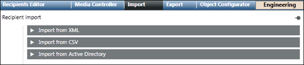
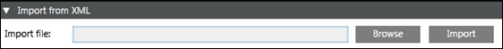
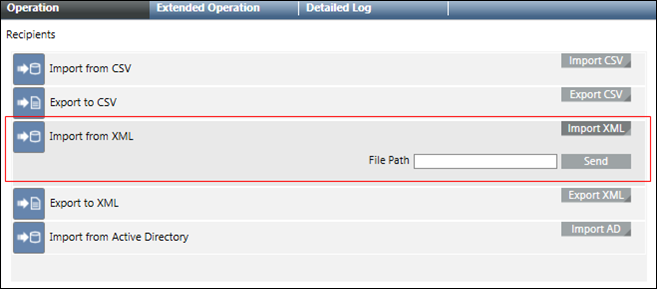
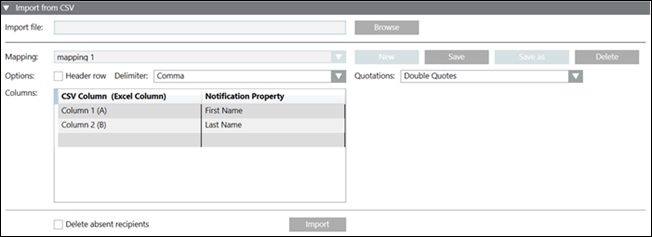
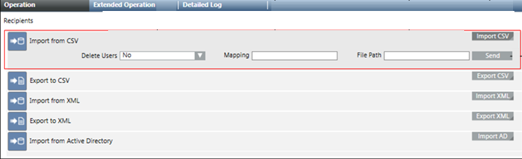
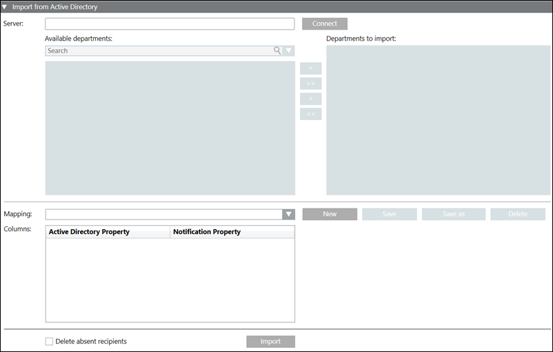
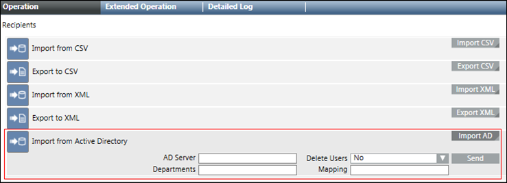
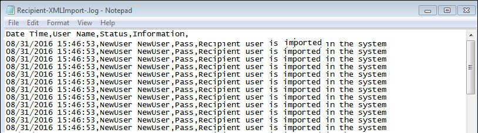

Import Tab
The Import tab allows the import of recipients from XML and CSV files and a department consisting of recipient users from an Active Directory.

- Import from XML: Import recipients from an XML file.
- Import from CSV: Import recipients from a CSV file.
- Import from Active Directory: Import a department consisting of recipient users from an Active Directory.

NOTE:
The Import and Active Directory functions are disabled for Windows App clients.
Import from XML
The Import from XML expander allows the import of recipients from an XML file.

- Import file: Displays the path of the XML file selected for import.
- Browse: Select the location where the XML file is stored.
- Import: Imports the selected XML file.
NOTE:
The XML format is meant for system-to-system exchange.
Import from XML using Command
The Import from XML using Command feature allows you to import recipients from an XML file through automatable Desigo CC commands.

- File Path: Displays the local XML file path of the Notification server.
- Import XML: Displays the File Path field and Send button on clicking Import XML.
- Send: Imports the XML file specified in the file path.
Import from CSV
The Import from CSV expander allows for mapping between columns in a CSV file and properties of recipient users, as well as import the recipients from a CSV file.

- Import file: The path of the CSV file that needs to be imported.
- Mapping: List of configured CSV mappings. One mapping needs to be configured for each CSV format. This feature also allows you to select a saved CSV import mapping.
- Header row: For the selected mapping, indicates whether the targeted CSV format uses a header row. Select this check box if the CSV file contains a header row that describes the content of each column. When the Header Row check box is selected, Notification will ignore the first line/row of the CSV file during import.
- Columns: For the selected mapping, defines the mapping of CSV columns to recipient user properties This feature allows you to create or update a CSV import mapping by allowing you to select a CSV column (Column 1 - Column 30) and then select a Notification property that the selected CSV column will be mapped to during the import.
- Delimiter: For the selected mapping, defines the column delimiter used by the targeted CSV format. This feature allows you to select a column delimiter symbol that defines column boundaries in the CSV file. The supported column delimiter symbols are: comma, semicolon, tab, and space.
- Browse: Opens a file selection dialog to select the CSV file.
- New: Creates a new CSV mapping.
- Save: Saves the new or updated CSV import mapping.
- Save as: Creates a copy of the selected mapping under a different name.
- Delete: Deletes the selected mapping.
- Quotations: For the selected mapping, defines the quotation marks used by the targeted CSV format.
- Import: Starts the recipient user import from the selected CSV file based on the configured mapping.
- Delete absent recipients: Deletes the existing recipients which are not present in the CSV file and are imported using identical import type (CSV) and mapping.
NOTE:
The CSV import mapping is specific to a given Notification project as well as to a given CSV file format. If either the Notification project or the CSV file format change, the CSV mapping will need to be updated.
Import from CSV using Command
The Import from CSV using the Command feature allows you to import recipients from a CSV file through automatable Desigo CC commands.

- Delete Users: Deletes the existing recipients which are not present in the CSV file and are imported using identical import type (CSV) and mapping.
- Mapping: Specify the mapping for CSV import.
- File Path: Displays the local CSV file path of the Notification server.
- Import CSV: Displays the Delete Users, Mapping, File Path field and Send button on clicking Import CSV.
- Send: Imports the CSV file specified in the file path.
Import from Active Directory
The Import from Active Directory expander allows the import of a department consisting of recipient users from an Active Directory.

- Server: The Active Directory server address from which the departments containing the recipient users need to be imported.
- Available departments: The list of available departments for the corresponding Active Directory server.
- Search: Search for a department.
- Connect: Connects to the Active Directory server.
- Departments to import: The list of the departments selected for import.
- Mapping: List of configured Active Directory mappings. One mapping needs to be configured for each Active Directory property. This feature allows to select a saved Active Directory import mapping.
- Columns: For the selected mapping, defines the mapping of an Active Directory property with a Notification property. This feature allows you to create or update an Active Directory import mapping by selecting an Active Directory property and then select a Notification property that the selected Active Directory property will be mapped to during the import.
- New: Creates a new Active Directory mapping.
- Save: Saves the New or Updated Active Directory import mapping.
- Save as: Creates a copy of the selected mapping under a different name.
- Delete: Deletes the selected mapping.
- Import: Starts the recipient user import from the selected Active Directory's department based on the configured mapping.
- Delete absent recipients: Deletes the existing recipients which are not present in the Active Directory file and are imported using identical import type (AD) and mapping.
Import from Active Directory using Command
The Import from Active Directory using the Command feature allows the import of a department consisting of recipient users from an Active Directory.

- AD Server: The Active Directory server address from which the departments containing the recipient users need to be imported.
- Delete Users: Deletes the existing recipients which are not present in the Active Directory file and are imported using identical import type (AD) and mapping.
- Import AD: Displays the AD Server, Delete Users, Departments, Mapping fields and Send button.
- Departments: Specify the departments selected for import.
- Mapping: Specify the configured Active Directory mapping.
- Send: Imports the recipients of the specified department from Active Directory server.
Log File
To effectively manage the import and export of recipients, it is necessary to receive feedback about the import export activity as well as any problems that may be occurring. The Notification provides separate and comprehensive Log Files that can be used to track and analyze the import export recipient activities. View or open the Log file stored at [Project Directory]\log on the server.
Log file Nomenclature
Recipient-[Import/Export]-[Format]-[Mapping Name].log
Log File Details
The Log file contains the following information:
- Time stamp
- Recipient username with unique ID
- Import/export status
- Detail information
- Level
NOTE: If the Log file with identical name exists then the existing Log file will be overwritten.
